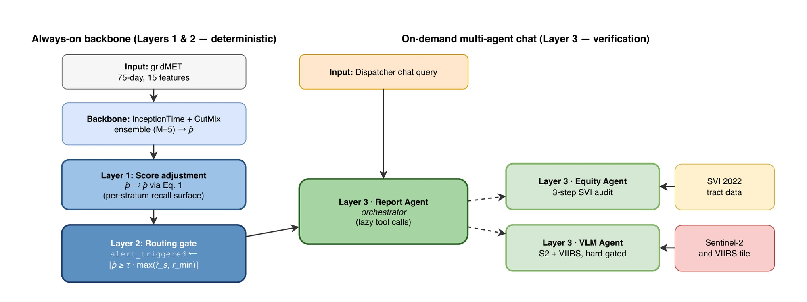
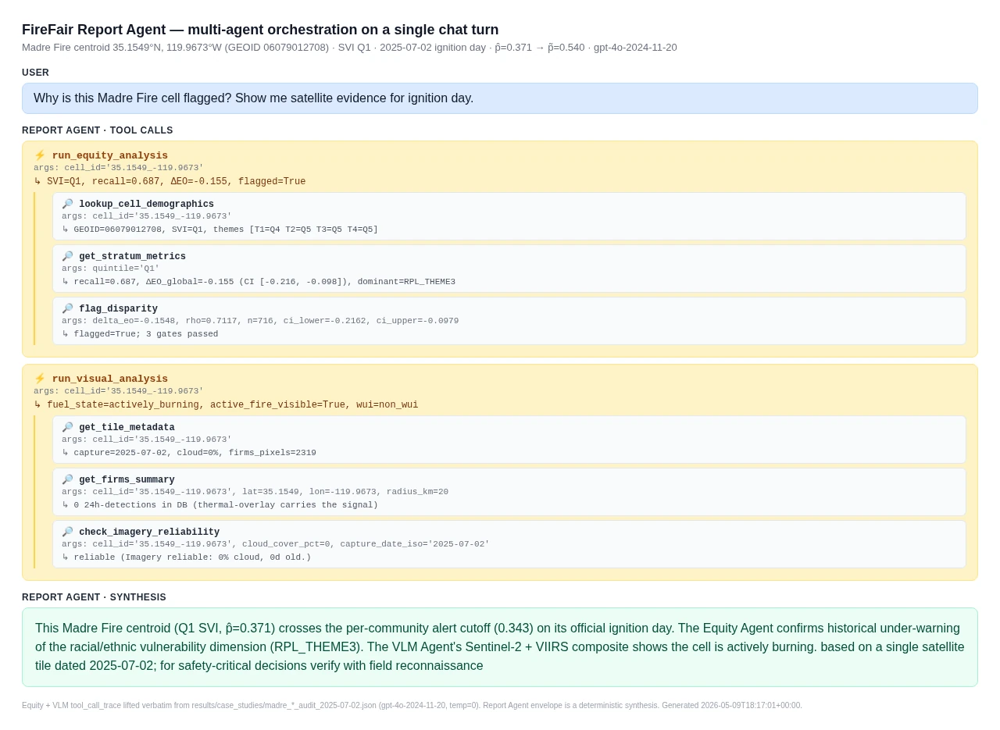
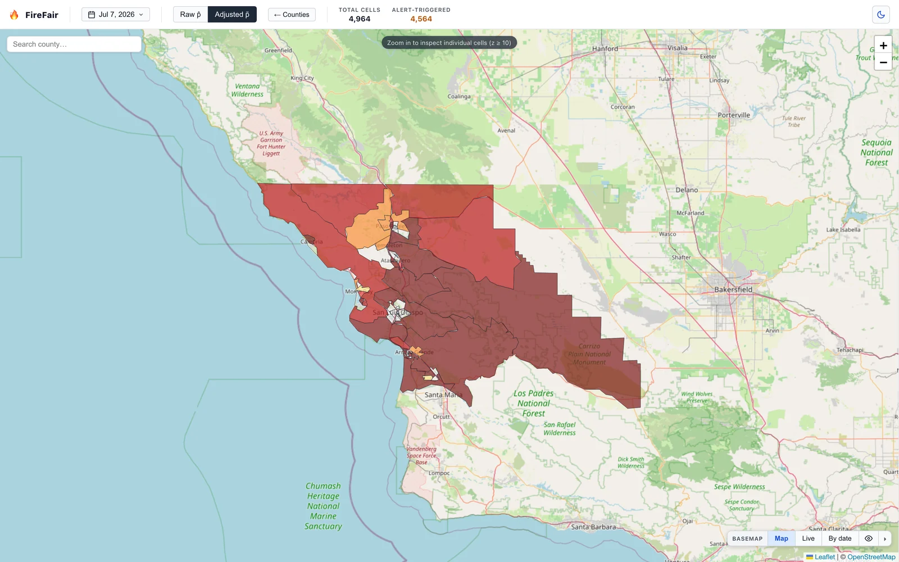
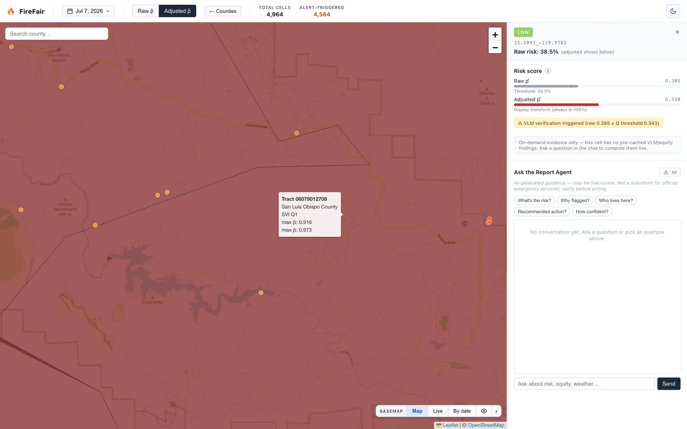
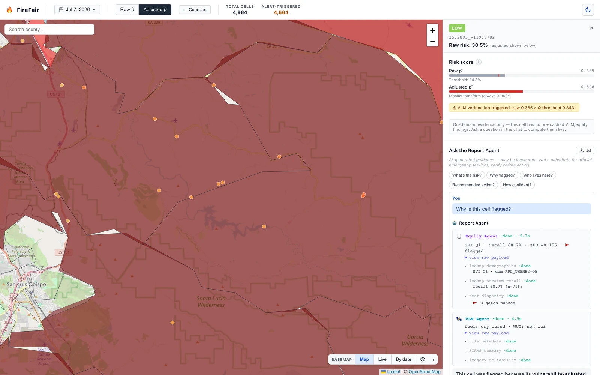

firefair.onrender.com

Aggregate metrics such as F1 and AUROC can mask systematic under-warning of socially vulnerable communities. FireFair audits a California wildfire forecaster by the CDC/ATSDR Social Vulnerability Index — then turns that audit into an operational routing signal with a chat-based multi-agent verification layer whose tool calls are visible to dispatchers.
1 Georgia Institute of Technology 2 Massachusetts Institute of Technology * equal contribution
Wildfire ML benchmarks report one F1 averaged across geography. But when each ~4 km grid cell is joined to its census tract and stratified by the CDC/ATSDR Social Vulnerability Index (SVI), the picture changes: at the standard threshold, the backbone recalls 69% of ignitions in the most vulnerable quintile versus 91% in the least vulnerable — a 22-point gap invisible to every aggregate metric.
Backbone: a five-member InceptionTime + CutMix ensemble (F1 = 0.741) on the California subset of the FireCastRL US Wildfire Dataset — 75-day gridMET weather sequences over 15 variables, ~4 km cells, held-out test fold of 7,154 cell-days split into disjoint calibration and evaluation halves.
Layers 1–2 are deterministic and always on; Layer 3 is an on-demand, chat-based agent stack whose every tool call streams live to the dispatcher. The equity audit doesn’t sit in an appendix — it decides where verification effort goes.
Rescales the raw ignition probability by each cell’s historical per-stratum recall — an equal-opportunity–inspired post-processing collapsed into a single auditable score. Strata with lower true-positive rates get lower effective cutoffs.
A cell enters the high-risk set when its adjusted score clears the threshold — operationalized as an equivalent per-community cutoff on the raw score, so the routing decision stays inspectable. Alert-triggered cells gate the VLM as a server-side hard rule.
A Report Agent orchestrates an Equity Agent (three-step SVI audit) and a hard-gated VLM Agent (Sentinel-2 + VIIRS evidence). Tool calls stream as Server-Sent Events — the dispatcher sees the evidence path, not just the answer.

A monolithic LLM would mix evidence of very different provenance, latency, and audit cost. FireFair assigns each stream to a specialized agent so every step of the chain is inspectable in the chat trace. All agents use native function-calling; the dispatcher can expand any raw payload.
The user-facing orchestrator. Answers dispatcher questions by lazily invoking tools and sub-agents, then synthesizes a brief explicitly conditioned on the equity findings.
Joins a cell to its SVI tract and runs a three-step audit — sample size, effect size, and interval gates — before flagging a disparity, with a stratum-adaptive tool budget.
Hard-gated on alert-triggered cells. Reads a Sentinel-2 RGB tile plus a VIIRS thermal-anomaly summary and returns typed evidence — fuel state, active fire, wildland–urban interface proximity — with a mandatory uncertainty caveat.
On the held-out evaluation half (n = 3,579), the adjusted configuration shrinks the equal-opportunity gap until it is statistically indistinguishable from zero, and lifts recall exactly where the backbone under-warned: +13.1 pp in Q1 and +15.8 pp in Q2, versus +1.4 pp in already-reliable Q5.
| Config | F1 | ΔEO | 95% CI | ρ | Q1 reviews | Total reviews |
|---|---|---|---|---|---|---|
| Raw p̂ | 0.741 | −0.155 | [−0.216, −0.098] | 0.71 | 301 | 1,582 |
| Adjusted p̃ | 0.725 | −0.038−75% | [−0.084, +0.006] | 0.88 | 380+26% | 1,933 |
Held-out triage ablation (neval = 3,579). ΔEO = RecallQ1 − RecallQ5 with 95% CI over 2,000 bootstrap resamples; ρ is the alert selection-rate ratio from disparate-impact analysis (1 = parity). Review counts use the per-community cutoffs. The disparity reduction is a deterministic consequence of the per-stratum cutoff geometry — not an optimization artifact.
Both fires post-date the backbone’s April 2025 training cutoff — genuine forward-time evidence, with ground truth from CAL FIRE incident records and InciWeb.
80,779 acres. Across a 21-day window bracketing ignition, the raw threshold issued zero alerts. The equity-adjusted Q1 cutoff routed 38 of 105 cell-days (36.2%) into multi-agent verification instead of silence.
At the fire centroid on ignition day, p̂ 0.371 → p̃ 0.540 clears the gate — and two days before ignition, p̂ = 0.359 had already crossed it, opening a plausible pre-ignition review window on the routing score alone.
Here the backbone alerts cleanly (p̂ 0.913 adjusted on the peak day, co-occurring with a persistent VIIRS active-fire signature), so there is no missed alert to rescue. Layer 3 shifts roles: from verifying a rescue to auditing equity within the fire.
On the SVI-Q1 centroid the Equity Agent runs its full three-step audit and flags a racial/ethnic-minority disparity in recall; on an adjacent Q4 cell ~6 km away, the same prompt short-circuits at the demographic lookup. The tool budget adapts to community vulnerability rather than being spent uniformly.

The prototype serves daily California risk maps with a Raw p̂ / Adjusted p̃ toggle, census-tract drill-down, and the full agent chat — every screenshot below is from the live system.

County drill-downTract-level adjusted risk over San Luis Obispo — the Madre Fire county, Carrizo Plain in deep maroon.
Cell-level score auditRaw 0.385 vs. adjusted 0.508 against the Q1 cutoff — with the VLM-verification trigger stated, not hidden.
Multi-agent chat, live“Why is this cell flagged?” — Equity and VLM agents stream their tool calls; every payload is expandable.
Statewide daily triage4,964 cells scored daily; the header counts alert-triggered cells under the equity-adjusted gate.
@inproceedings{yan2026firefair,
author = {Yan, Kefei and Yang, Frank F. and Wang, Yiyang and Yang, Ziyi and
Liu, Kewen and Chen, Yuzhuo and Cabral, Alex and Hester, Josiah},
title = {FireFair: Equity-Adjusted Multi-Agent Triage for Wildfire
Ignition Forecasting},
booktitle = {International Conference on Information Technology for
Social Good (GoodIT '26)},
year = {2026},
address = {Pisa, Italy},
publisher = {ACM},
doi = {10.1145/3794786.3830751}
}